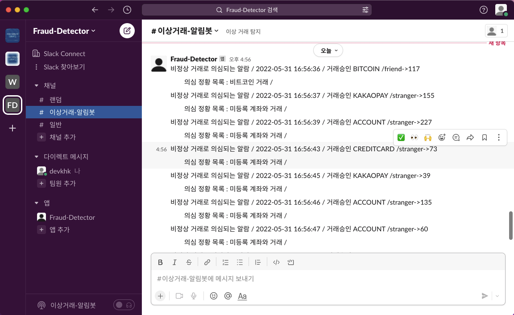

data-engineering-study
데이터 엔지니어링 학습 포트폴리오
패스트 캠프 데이터 엔지니어링 강의를 학습하며 정리, 공부
학습 목표
- ETL 방식에서 ELT 흐름으로 넘어가는 모던 데이터 엔지니어링 아키텍쳐 이해
- 과거 데이터와 실시간 데이터를 기반으로 배치 파이프라인과 스트림 파이프라인을 동시에 사용하는 ML 데이터 학습 & 서빙 파이프라인 설계
학습 내용
- Spark : 데이터 병렬-분산 처리
- Airflow : 데이터 오케스트레이션
- Kafka : 이벤트 스트리밍
- Flink : 분산 스트림 프로세싱
학습 아키텍쳐
Spark
- 배치 데이터 분석
- Data Preprocessing
- Hyper Parmeter 파이프라인
- ML 예측 모델 학습 파이프라인
데이터 분석 - 날짜별 택시 이용
데이터 분석 - 요일별 택시 이용
학습 모델 예측 결과 값
Airflow

Airflow DAG Depedency Grpah
Kafka
- 카프카 실시간 빅데이터 처리 실습
- 카프카를 활용한 Fraud Detection Sub Project
실시간 결재 정보 스트림
의심 거래 정황 Slack 알람봇

Flink
- 스트림 데이터 프로세싱 실습
- 플링크를 활용한 Twitter API RealTime Stream Process Sub Project
- 배치 데이터 모델을 실시간 택시비 예측에 사용하기
카프카 + 플링크를 활용한 실시간 피드 단어 수 세기 Sub Project
배치 모델을 활용한 실시간 택시비 예측
수료 링크 & 기타
수료증명서
학습 과정 기록 블로그
깃허브 링크
이력 링크